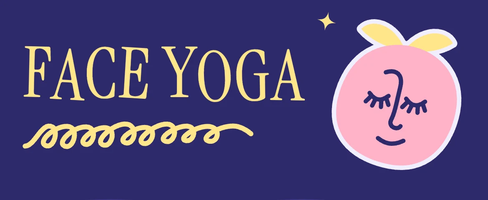
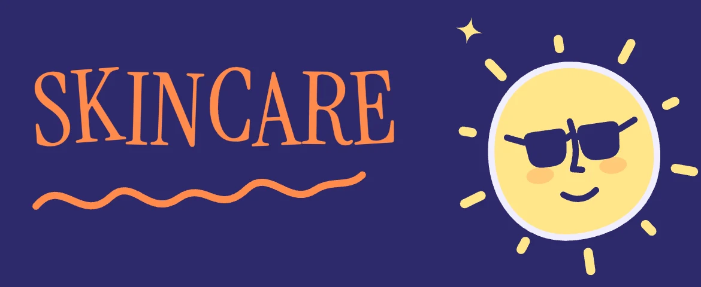
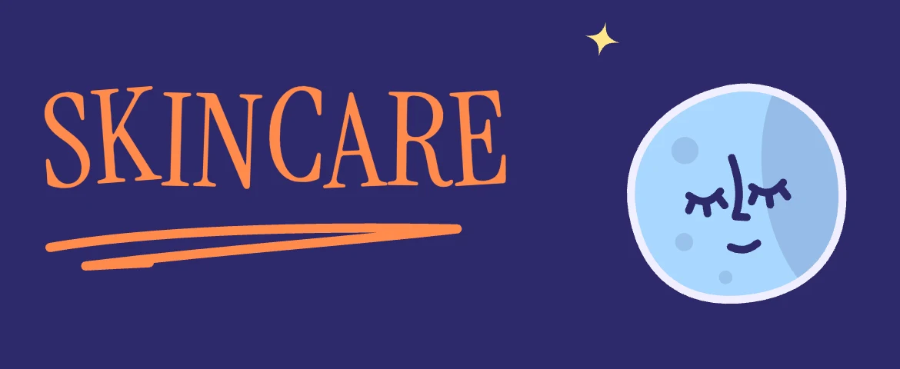
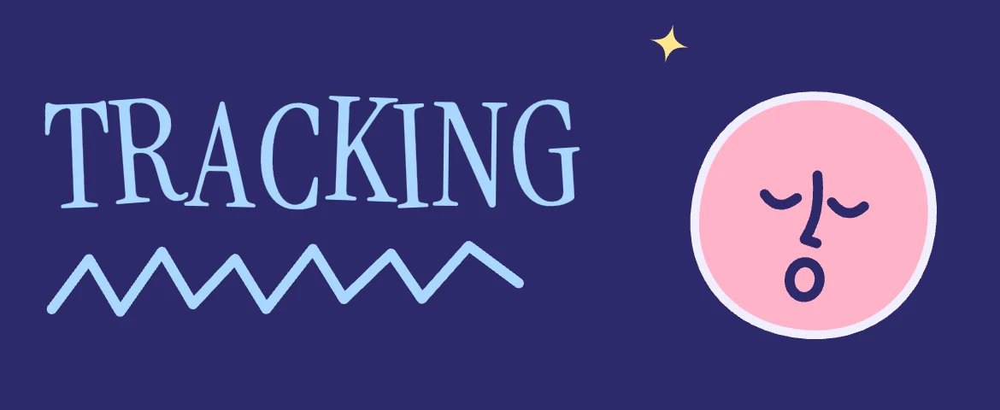

01
Drawing
The first steps were drawn in the sticker style. Charming, but you couldn’t tell which finger goes where.
Dewy is a face yoga and skincare app I designed for my own daily routine. I created its identity, a cast of animated sticker characters, the lettering and the interface. It’s live, and it sits on my Home Screen.
Recorded in the appAdd to Home Screen and it opens full screen
Six face yoga exercises, a seven-step morning routine and four steps at night. I wanted one calm place to follow them, with my moves, my products and a streak.
It had to feel like a personal notebook, not a clinic.
Every screen and every exercise has its own sticker: a sprout for face yoga, a sun and a moon for morning and night, and six faces that act out each move. They share one line weight and a die-cut white edge, so they read as one set.
They’re animated in stop-motion at 12 fps, on twos. Each holds still most of the time and has one small moment: the sprout’s lashes flutter, the sun puts on its sunglasses, the moon nods off.
Screen titles are set in a condensed serif, each letter at its own slight angle, with a hand-drawn squiggle underneath that changes on every visit. The Dewy logotype pairs the sprout with the same serif in lowercase.




The first palette, Berry, flooded the screens in warm colours, and the characters got lost in them. Iris keeps one deep blue-violet throughout and saves the warm colours for the characters.


Each exercise step had to show exactly where the fingers go. I tested three ways to show it, and kept moving towards whatever made the move clearest.
The first steps were drawn in the sticker style. Charming, but you couldn’t tell which finger goes where.

One fixed setup, so 12 stills cover all 18 steps, with every finger exactly where the move needs it.
Moves that follow a path, like eye circles, get a short loop, so the motion reads at a glance.
Swipe for all three →
Dewy is live and in daily use. Next: filmed motion references for the remaining exercise videos.